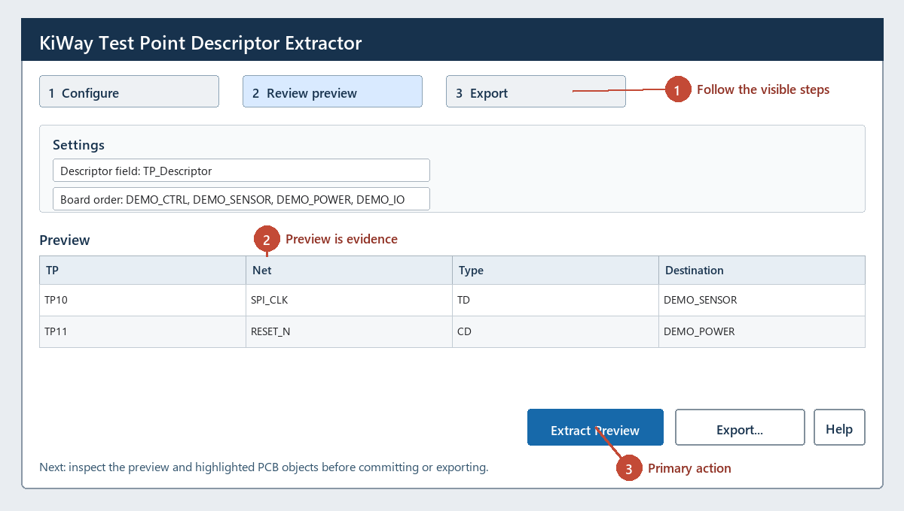

The numbered cues below match the visible workflow in the plugin. A preview is the review evidence; committing or exporting is the final step.

Extracts test-point descriptors and produces CSV, Markdown, and HTML documentation for integration and test teams.
TP_Descriptor.DEMO_CTRL,DEMO_SENSOR,DEMO_POWER,DEMO_IO.DEMO_CTRL_DEMO_SENSOR_SIGNAL_SPI1_CLK_1_TD source: DEMO_CTRL destination: DEMO_SENSOR signal: SPI1_CLK_1 type: Telemetry Digital
| Token | Meaning |
|---|---|
| TM / TC | Telemetry / Telecommand |
| TA / TD | Telemetry Analog / Digital |
| CA / CD | Command Analog / Digital |
Descriptor parsing is convention-based. Review endpoint blanks and ambiguous naming before an ICD release.